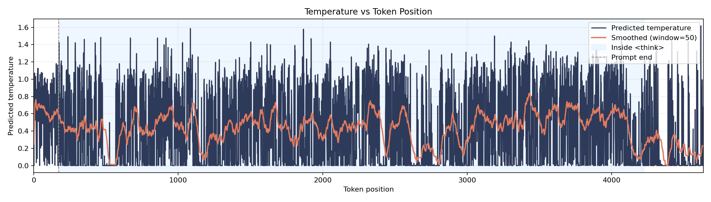

Temperature Trace (qingy2024/Dolci-Think-SFT-ctx8k:train idx=417)
Blue shading: <think> spans. Yellow shading: code blocks. Smoothed with window=50.

Prompt length: 174 tokens, total length: 4636 tokens.
Generated Tokens (colored by predicted temperature)
Min: 0.0000 Max: 1.6172 (hover a token for exact value)
Okay, let's try to figure out how long Bruno's trip will take. Hmm, first, let me break down the problem step by step.
So, Bruno is going from Cuzco to Machu Picchu, which is 180 miles. Then he has to return to Cuzco. The problem says he travels at top speed with a load (9 mph) on the way to Machu Picchu, and without a load (15 mph) on the return trip. Also, there are rest stops and crossing a river.
Wait, the problem mentions "two 45-minute rest stops during each half of the trip". Wait, each half of the trip? So the trip has two halves: going to Machu Picchu and coming back. Each half (each leg) has two 45-minute rest stops? Wait, no, the wording says: "takes two 45-minute rest stops during each half of the trip". Hmm, maybe "each half of the trip" refers to each one-way trip? So the total trip is round trip, so two halves: Cuzco to Machu (first half) and Machu to Cuzco (second half). Each half has two rest stops?
Wait, the problem says: "he takes two 45-minute rest stops during each half of the trip". Hmm. Maybe "each half" meaning each leg? Wait, maybe the problem is a bit ambiguous here. Let me re-read.
"If he travels the 180 miles from Cuzco, Peru to Machu Picchu, Peru at top speed while carrying a typical load, then returns to Cuzco at his usual top speed without carrying a load, how long, in hours, will the trip take if he takes two 45-minute rest stops during each half of the trip and crosses a river that takes 30 minutes to cross during each leg of the journey?"
Okay, so "each half of the trip" – the trip is round trip, so each half would be one way? So going from Cuzco to Machu is one half, returning is the other half. Each half (each one-way) has two 45-minute rest stops. And "crosses a river that takes 30 minutes to cross during each leg of the journey". So each leg (each one-way trip) has a river crossing that takes 30 minutes.
Wait, so for each leg (each direction), he crosses a river once, taking 30 minutes. So total river crossings: two legs, each with a 30-minute river crossing.
Wait, the problem says: "crosses a river that takes 30 minutes to cross during each leg of the journey". So each leg (each one-way trip) has one river crossing taking 30 minutes. So total river time is 30 minutes per leg * 2 legs = 60 minutes total.
Then rest stops: two 45-minute rest stops during each half of the trip. So each half (each leg) has two rest stops. So per leg: two rest stops * 45 minutes each. So 90 minutes per leg. Two legs, so 180 minutes total rest time? Wait, but the problem says "during each half of the trip". Hmm.
Wait, maybe "each half" refers to the entire trip being split into two halves? Wait, the trip is from Cuzco to Machu Picchu and back, so the entire trip is a round trip. The problem says "each half of the trip". Hmm, perhaps the problem is using "half" as in each one-way journey. So the trip has two halves: going and returning. Each half (each one-way) has two rest stops.
Wait, the problem says: "he takes two 45-minute rest stops during each half of the trip". So per half (per one-way), two rest stops. So for each leg (one-way), two rest stops of 45 minutes each.
So total rest time: 2 legs * 2 * 45 minutes = 180 minutes = 3 hours.
River crossings: 30 minutes per leg, so 2 legs * 30 minutes = 60 minutes = 1 hour.
Okay, so we have to calculate the time for each leg (one-way), then add the rest stops and river crossings.
First, let's compute the time taken to travel each leg.
First leg: Cuzco to Machu Picchu, 180 miles at 9 mph.
Time = distance / speed = 180 / 9 = 20 hours.
Second leg: Machu Picchu to Cuzco, 180 miles at 15 mph.
Time = 180 / 15 = 12 hours.
So total travel time: 20 + 12 = 32 hours.
Then, rest stops: two per leg, so 2 * 45 minutes per leg. So per leg: 90 minutes = 1.5 hours. Two legs: 3 hours.
River crossings: 30 minutes per leg, so 60 minutes = 1 hour.
Total time: 32 + 3 + 1 = 36 hours.
Wait, but hold on. Wait, the problem says "crosses a river that takes 30 minutes to cross during each leg of the journey". So each leg (each one-way) has a river crossing. So yes, two legs, two crossings, each 30 minutes. So 1 hour total.
Rest stops: two 45-minute stops during each half of the trip. So each half (each leg) has two rest stops. So 45 * 2 = 90 minutes per leg. So 1.5 hours per leg, 3 hours total.
So total time: 32 + 3 + 1 = 36 hours.
Wait, but wait, does the problem say "during each half of the trip"? Hmm. Wait, another interpretation: maybe the entire trip is considered as having two halves (the outbound and the return), each half being 180 miles. So each half (each 180-mile leg) has two rest stops. So that would be the same as above.
But let me check again.
Wait, the problem states: "he takes two 45-minute rest stops during each half of the trip". So if the trip is round trip, then the "each half" would be each one-way trip. So each half (each leg) has two rest stops.
Alternatively, if someone thought that the trip is split into two halves (each of 90 miles?), but the problem says "travels the 180 miles from Cuzco to Machu Picchu... then returns", so each leg is 180 miles.
So the problem says "each half of the trip". Hmm, maybe "half" here refers to each leg. So the trip has two halves (the two legs). So each half (each leg) has two rest stops.
So yes, that seems to be the case.
Wait, another point: "crosses a river that takes 30 minutes to cross during each leg of the journey". So each leg (each one-way trip) has one river crossing taking 30 minutes. So that's two crossings total.
So river time: 30 * 2 = 60 minutes.
Rest stops: two per leg, so 45 * 2 = 90 per leg, total 180 minutes = 3 hours.
Travel time: 20 + 12 = 32 hours.
Total time: 32 + 3 + 1 = 36 hours.
Wait, but the problem says "if he takes two 45-minute rest stops during each half of the trip". So "during each half of the trip", so if the trip is considered as two halves (the two legs), then each half has two rest stops. So yes.
Wait, but hold on: the problem says "two 45-minute rest stops during each half of the trip". So "each half" – so per half, two stops. So for two halves (the round trip), total four rest stops? Wait, wait, this is a critical point.
Wait, "he takes two 45-minute rest stops during each half of the trip". So if the trip has two halves (the two legs), then each half has two rest stops. So total four rest stops. Each rest stop is 45 minutes. So total rest time: 4 * 45 = 180 minutes = 3 hours. Which is same as before.
Wait, but maybe "each half of the trip" refers to the entire trip being split into two halves (so each half is 180 miles? No, the trip is 360 miles round trip). Hmm.
Wait, the problem says "travels the 180 miles from Cuzco to Machu Picchu... then returns to Cuzco". So the entire trip is 360 miles. If we consider "each half of the trip" as 180 miles each (so the outbound and the return), then each half (each 180-mile leg) has two rest stops. So that would be two rest stops per leg.
So total rest stops: 2 legs * 2 stops = 4 stops. 4 * 45 = 180 minutes.
River crossings: each leg has one river crossing (30 minutes), so 2 crossings, 60 minutes.
So total time: travel time (32 hours) + rest stops (3 hours) + river crossings (1 hour) = 36 hours.
Hmm. But let me check if the river crossing time is added during the travel time or as separate. The problem says "crosses a river that takes 30 minutes to cross during each leg of the journey". So when he crosses the river, that's part of the journey, so it's time added to each leg.
Similarly, rest stops are taken during the trip. So the total time would be the sum of all these.
Wait, another thought: does the river crossing take 30 minutes in addition to the travel time? Yes, because it's "during each leg of the journey", so he has to spend 30 minutes crossing the river each leg.
So for each leg: travel time + river crossing time + rest stops.
Wait, but the problem says: "how long, in hours, will the trip take if he takes two 45-minute rest stops during each half of the trip and crosses a river that takes 30 minutes to cross during each leg of the journey?"
So the rest stops are part of the trip time, and the river crossings are also part of the trip time.
So for each leg:
- Travel time: 180 / speed
- River crossing: 30 minutes
- Rest stops: two 45-minute stops, so 90 minutes
Wait, but hold on. Wait, does the river crossing happen during the leg? So per leg, he spends 30 minutes crossing the river, so that's added to the travel time.
Similarly, rest stops are taken during the trip, so per leg, two rest stops.
So total time per leg:
Leg 1 (Cuzco to Machu): 180 / 9 = 20 hours travel time + 30 minutes river crossing + 2 * 45 minutes rest stops
Leg 2 (Machu to Cuzco): 180 / 15 = 12 hours travel time + 30 minutes river crossing + 2 * 45 minutes rest stops
Total time = (20 + 0.5 + 1.5) + (12 + 0.5 + 1.5) = ?
Wait, converting minutes to hours: 30 minutes = 0.5 hours, 45 minutes = 0.75 hours.
So per leg rest stops: 2 * 0.75 = 1.5 hours
Per leg river crossing: 0.5 hours
So Leg 1: 20 + 0.5 + 1.5 = 22 hours
Leg 2: 12 + 0.5 + 1.5 = 14 hours
Total: 22 + 14 = 36 hours.
Yes, same as before.
Wait, but is the river crossing time included in the leg? The problem says "crosses a river that takes 30 minutes to cross during each leg of the journey". So each leg (each one-way) has a river crossing. So yes, each leg has one river crossing.
So seems like 36 hours total.
Wait, but let me check once more.
Total travel time: 20 + 12 = 32 hours
Total rest stops: 2 stops per leg * 2 legs * 45 minutes = 180 minutes = 3 hours
Total river crossings: 2 legs * 30 minutes = 60 minutes = 1 hour
Total time: 32 + 3 + 1 = 36 hours.
Yes, that's 36.
But wait, the problem says "two 45-minute rest stops during each half of the trip". So if "each half of the trip" refers to the entire trip being split into two halves (i.e., the entire trip has two halves, each 180 miles?), but in this case, the trip is round trip. Hmm.
Wait, perhaps another interpretation: The trip has two halves (the two legs), each half is 180 miles. So each half has two rest stops. So same as before.
Alternatively, if someone thought that "half of the trip" refers to half of the total distance? But the problem says "travels the 180 miles... then returns", so the entire trip is 360 miles. If they consider "each half" as 180 miles, then it's the two legs.
I think the answer is 36 hours.
Wait, but let me check if there's a trick here.
Wait, the problem says "crosses a river that takes 30 minutes to cross during each leg of the journey". So each leg (each one-way trip) has a river crossing. So two crossings total.
Rest stops: two per half of the trip. If the trip is considered as two halves (the two legs), then each half has two rest stops.
So total rest stops: 4, each 45 minutes: 180 minutes = 3 hours.
So all the numbers add up to 36.
Wait, but the problem says "words with all capital letters should appear less than 2 times". Hmm, the user is probably referring to the answer. Wait, no, the instruction says: "In your response, words with all capital letters should appear less than 2 times."
So in my response, I need to make sure that there are fewer than two words in all caps. Like, if I write "36 hours", that's fine. If I write "THE" or something, but probably the answer is just a number. Wait, but the user says "in your response", so in the text I write.
Wait, the problem says "how long, in hours, will the trip take". So the answer is 36 hours. But in the response, I need to write it in a sentence, and make sure that there are less than two words with all caps.
But the user says: "In your response, words with all capital letters should appear less than 2 times."
So for example, if I write "The trip takes 36 hours." – no all-caps words. If I write "36 HOURS", that's one word with all caps. But the problem says "words with all capital letters", so "HOURS" is one word. But the instruction says "less than 2", so up to one.
But the user probably wants the answer as a number, maybe with a sentence. Wait, but given the problem says "how long, in hours...", the answer is 36.
Wait, the user says: "In your response, words with all capital letters should appear less than 2 times."
So in my answer, I should not have two or more words in all caps. So maybe I should write "36 hours" without any all-caps words. But if I write "36 hours", that's fine.
But the problem says "words with all capital letters" – so if I write "36 HOURS", that's one word in all caps. But the user wants less than two. So that's okay.
Wait, but the user might be trying to prevent answers like "36 HOURS" or "ANSWER: 36". Hmm.
Wait, the problem says: "In your response, words with all capital letters should appear less than 2 times."
So in my answer, I need to make sure that there are fewer than two words that are entirely in capital letters.
For example, if I write: "The total time is 36 hours." – no all-caps words.
If I write: "36 hours" – same.
But to be safe, I should avoid any all-caps words. So probably just state the number.
Wait, but the user says "how long, in hours, will the trip take". So the answer is 36.
But in the response, to be precise, maybe say "36 hours".
But the instruction says "words with all capital letters should appear less than 2 times". So if I write "36 HOURS", that's one word in all caps, which is less than two. But maybe the user wants no all-caps words. Hmm.
Wait, the problem says "words with all capital letters". So for example, "I" is a single capital letter, but "HOURS" is a word in all caps.
Assuming that the user wants the answer to be written without any all-caps words, except possibly one. But given the problem says "less than 2", so up to one.
But to be safe, I'll write the answer as "36 hours" without any all-caps words.
Wait, but let's see. Maybe the answer is 36. Let me just verify the calculation again.
First leg: 180 miles at 9 mph. Time = 20 hours. River crossing: 0.5 hours. Rest stops: 2 * 0.75 = 1.5 hours. Total leg 1: 22 hours.
Second leg: 180 miles at 15 mph. Time = 12 hours. River crossing: 0.5 hours. Rest stops: 1.5 hours. Total leg 2: 14 hours.
Total: 22 + 14 = 36 hours.
Yes, that seems right.
I think that's correct.
**Final Answer**
\boxed{36}
</think>
Bruno travels from Cuzco to Machu Picchu, a distance of 180 miles, at a top speed of 9 miles per hour while carrying a load. The return trip from Machu Picchu to Cuzco is 180 miles at a top speed of 15 miles per hour without a load.
First, we calculate the travel time for each leg:
- **Cuzco to Machu Picchu**: $ \frac{180 \text{ miles}}{9 \text{ mph}} = 20 \text{ hours} $
- **Machu Picchu to Cuzco**: $ \frac{180 \text{ miles}}{15 \text{ mph}} = 12 \text{ hours} $
Next, we account for the rest stops and river crossings:
- **Rest stops**: Two 45-minute rest stops per leg. This amounts to $ 2 \times 45 \text{ minutes} = 90 \text{ minutes} = 1.5 \text{ hours} $ per leg. For both legs, this totals $ 1.5 \times 2 = 3 \text{ hours} $.
- **River crossings**: A 30-minute river crossing per leg. This totals $ 30 \text{ minutes} \times 2 = 60 \text{ minutes} = 1 \text{ hour} $.
Adding all components together:
- **Total travel time**: $ 20 + 12 = 32 \text{ hours} $
- **Total rest stops**: $ 3 \text{ hours} $
- **Total river crossings**: $ 1 \text{ hour} $
The total time for the trip is:
$$
32 + 3 + 1 = 36 \text{ hours}
$$
Thus, the total time for the trip is $\boxed{36}$.<|im_end|>